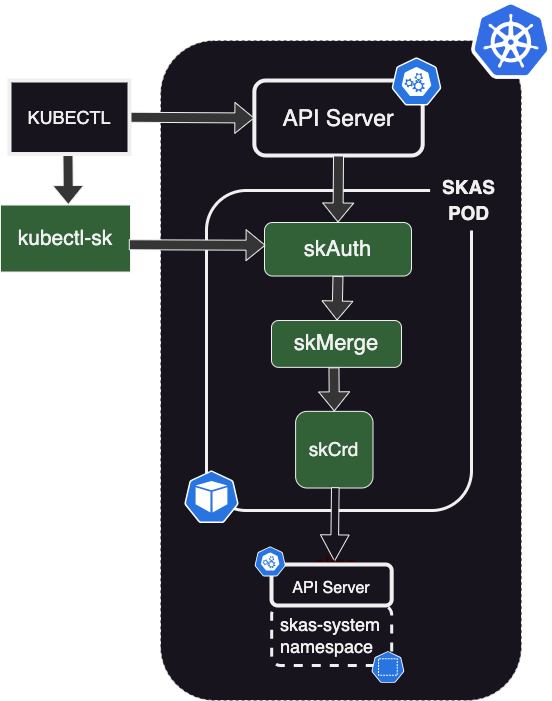
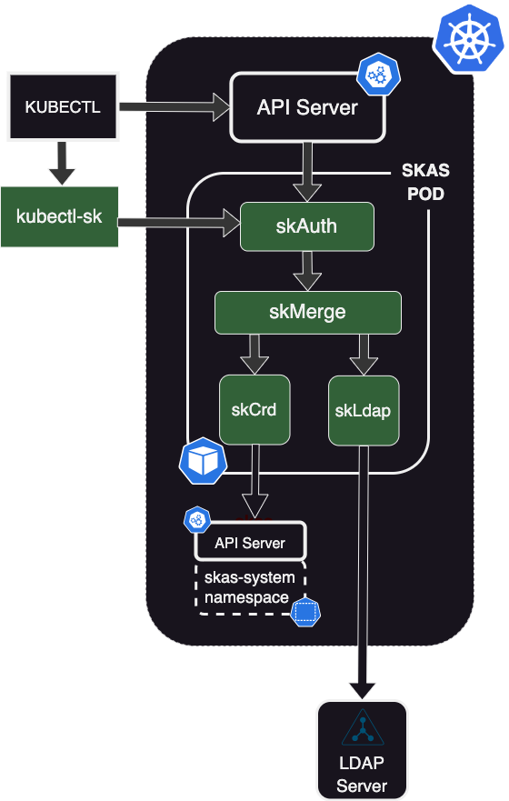

Architecture
Overview
Initial deployment
Here are the different modules involved in SKAS authentication right after base installation:

SKAS is deployed as a Kubernetes Pod, hosting three containers:
skAuthwhich is responsible for delivering Kubernetes tokens and validating them.skmerge, which is responsible for building a consolidated identity from several Identity Providers. In this configuration, with only one provider, it acts as a simple passthrough.skCrd, which is an Identity Provider storing user's information in the Kubernetes storage, in the namespaceskas-admin.
In this schema, the arrows represent the main communication flow between the components, all of which involve HTTP exchanges.

Here is a summary of the exchange for an initial interaction:
- The user issues a
kubectlcommand (such askubectl get pods). For this, a token is needed. It will be provided by thekubectl-skclient-go credential plugins. kubectl-skprompts the user for login and password, then issues atokenCreate()request to theskAuthmodule.- The
skAuthmodule issues agetIdentity()request with user credentials. This request is forwarded to theskCrdmodule. - The
skCrdmodule retrieves the user's information, checks password validity, and sends the information upward to theskMergemodule, which forwards them to theskAuthmodule. - The
skAuthmodule generates a token and sends it back to thekubectl-skmodule, which forwards it tokubectl. kubectlsends the original request with the token to the Kubernetes API server.- The API Server sends a
tokenReview()request to theskAuthmodule, which replies with the user's information (user id and groups). - The API Server applies its RBAC rules on user's information to allow or deny the requested operation.
For a more detailed description of this interaction, you can refer to the sequence diagram.
LDAP setup

This schema describes the architecture when an LDAP server has been configured, as detailed in the previous chapter.
The skMerge module is now connected to two identity providers: skCrd and skLdap, with skLdap being linked to an external LDAP server.

Modules and interfaces
Here is a description of the modules comprising SKAS and their interfaces:
Identity providers (skCrd, skLdap, skStatic)
The
skStaticprovider hosts its user database in a configMap. It was used for testing during the primary development stages. It is now deprecated and undocumented.
Under the default configuration, interfaces provided by these modules are associated with an HTTP server bound to localhost,
making them accessible only from another container in the same pod (typically skMerge).
Identity
These modules provide an identity interface. The request contains the user's login and optionally the user's password.
The response will convey the user's information (UID, common names, emails, groups) if the user is found, along with a status:
UserNotFound: If the user does not exist in this provider.PasswordUnchecked: If the password was not provided in the request or if there is no password defined by this provider.PassswordChecked: If a password was provided in the request and the provider validates it.PasswordFailed: If a password was provided in the request and the provider does not validate it.Disabled: If the user is found but itsdisabledflag is set.Undefined: If the provider is out of order (for example, if the LDAP server is down).
PasswordChange
The skCrd provider also handles another interface: passwordChange, which allows password modification by providing the old
and new password (the latter in its hashed form).
skMerge
Under the default configuration, the interfaces provided by this module are associated with an HTTP server bound
to localhost, making them accessible only from another container in the same pod (typically skAuth)."
Identity
The skMerge module supports the same identity interface as a provider. Of course, the returned value is the merge of information from its underlying providers.
This module also supports some extensions of this identity protocol:
- The returned result also indicates which provider was the 'authority' (the one that validates the password) for this user.
- The request can include a
detailedflag. If set, the response will include a detailed list of responses from each provider. This is intended to be displayed by thekubectl-sk user describeCLI command."
PasswordChange
The skMerge module also supports a passwordChange interface. The request must contain the user's authority, which is the target provider to which this message will be forwarded.
skAuth
Under the default configuration, all interfaces provided by this module are exposed to the outside world through an ingress controller. They are secured using end-to-end SSL, with SSL termination handled by the module itself, and the ingress configured in SSL passthrough mode.
Except for the login and tokenReview interfaces, all others in this module are designed to be called from the kubectl-sk client executable.
TokenCreate
The tokenCreate request contains a user's login and password. If the authentication is successful, a token is generated. The response will include:
- The generated token.
- User information for the
whoamisubcommand. - The clientTTL for token expiration in the client's local cache.
- The authority, indicating the provider that validated the login/password.
TokenRenew
The tokenRenew interface check if the token is still valid and renew (touch) it.
The tokenRenew interface checks if the token is still valid and renews (touch) it.
PasswordChange
This is a simple passthrough that forwards the request to the underlying skMerge provider.
Kubeconfig
This interface provides a set of information that allows kubectl-sk to create an entry in the client config file,
typically located at ~/.kube/config, for accessing the targeted SKAS-enabled cluster. This enables automatic client-side configuration.
Identity
This interface is intended to be called for a kubectl-sk user describe operation. It forwards the request to the
underlying skMerge module. However, since this operation is reserved for the SKAS administrator, the caller must
provide authentication credentials, typically its token, to ensure they have the necessary rights
Login
This interface checks user credentials. If successful, the user's information is provided in the response. It is intended to be used by other applications, such as the DEX connector.
This interface is disabled by default in the configuration.
TokenReview
This interface is designed to support Webhook Token Authentication. It will be invoked by the Kubernetes API server to validate a token and retrieve associated user attributes.
Interfaces exposition
Each interface can be exposed at three levels:
- Locally, accessible only from other containers in the same pod.
- Internally within Kubernetes, by creating a Kubernetes Service.
- Externally outside Kubernetes, by configuring a Kubernetes ingress controller.
For each module, every exposed API can be accessed on two ports:
- One is associated with a server bound to localhost, enabling intra-pod communication. In configuration files,
this interface is referred to as the
internalone. - The other is associated with a server bound to the pod interface, designed to be exposed as a service or through an
ingress. Communication on this interface is always encrypted using SSL. In configuration files, this interface is
referred to as the
externalone.
Depending on the configuration, either one or both ports can be activated.
In the default configuration:
- Only the port bound to localhost is activated for the
skCrd,skLdap, andskMergemodules. - For the
skAuthmodule, only the port bound to the pod interface is activated.
Sequence diagrams
Initial user connexion
Below is the sequence of events for a successful initial connection:
sequenceDiagram
participant User
participant kubectl
participant kubectl-sk
participant skAuth
participant Api server
autonumber
User->>kubectl: The user issues a<br>kubectl command
kubectl->>kubectl-sk: kubectl launches<br>the kubectl-sk<br>credential plugin
kubectl-sk->>kubectl-sk: kubectl-sk searches for<br>a token in its local cache.<br> Not found in this case.
kubectl-sk->>User: kubectl-sk prompts<br>for login and password
User-->>kubectl-sk: User provides its credential
kubectl-sk->>skAuth: HTTP GET REQ:<br>getToken()
skAuth->>skAuth: skAuth calls<br>skMerge which<br>validates the user's<br>credentials and returns<br>user's information<br>Subsequently, a token is generated.
skAuth-->>kubectl-sk: Token in<br>HTTP response
kubectl-sk-->>kubectl: kubectl-sk returns<br>the token to kubectl<br>by printing it on<br>stdout and exits.
kubectl->>Api server: kubectl issues the appropriate API call<br>with the provided bearer token
Api server->>skAuth: The API Server<br>issues an<br>HTTP POST<br>with a<br>TokenReview<br>command
skAuth-->>Api server: skAuth validates<br>the token and <br>provides user's<br>name and groups<br>in the response.
Api server->>Api server: API Server validates<br>if user is allowed by<br>RBAC to perform<br>the requested action
Api server-->>kubectl: API Server returns the action result
kubectl-->>User: kubectl displays<br>the result and exitsToken renewal
Here is the sequence when a valid token is already present in the client's local cache.
sequenceDiagram
participant User
participant kubectl
participant kubectl-sk
participant skAuth
participant Api server
autonumber
User->>kubectl: The user issues a<br>kubectl command
kubectl->>kubectl-sk: kubectl launches<br>the kubectl-sk<br>credential plugin
kubectl-sk->>kubectl-sk: kubeclt-sk lookups<br>for token in its <br>local cache.<br>Found in this case
kubectl-sk->>kubectl-sk: Is the token still<br>valid against the<br>clientTokenTTL<br>YES in this case
kubectl-sk-->>kubectl: kubectl-sk returns<br>the token to kubectl<br>by printing it on<br>stdout and exits.
kubectl->>Api server: kubectl issues the appropriate API call<br>with the provided bearer token
Api server->>skAuth: The API Server<br>issues an<br>HTTP POST<br>with a<br>TokenReview<br>command
skAuth-->>Api server: skAuth validates<br>the token and <br>provides user's<br>name and groups<br>in the response.
Api server->>Api server: API Server validates<br>if user is allowed by<br>RBAC to perform<br>the requested action
Api server-->>kubectl: API Server returns the action result
kubectl-->>User: kubectl displays<br>the result and exitsHere is the sequence when a token is still valid, but the short-lived local cache has expired.
sequenceDiagram
participant User
participant kubectl
participant kubectl-sk
participant skAuth
participant Api server
autonumber
User->>kubectl: The user issues a<br>kubectl command
kubectl->>kubectl-sk: kubectl launches<br>the kubectl-sk<br>credential plugin
kubectl-sk->>kubectl-sk: kubeclt-sk lookups<br>for token in its <br>local cache.<br>Found in this case
kubectl-sk->>kubectl-sk: Is the token still<br>valid against the<br>clientTokenTTL<br>NO in this case
kubectl-sk->>skAuth: HTTP GET REQ:<br>validateToken()
skAuth->>skAuth: skAuth check<br>if token is still valid.<br>Yes in this case
skAuth-->>kubectl-sk: tokenValid response
kubectl-sk-->>kubectl: kubectl-sk returns<br>the token to kubectl<br>by printing it on<br>stdout and exits.
kubectl->>Api server: kubectl issues the appropriate API call<br>with the provided bearer token
Api server->>skAuth: The API Server<br>issues an<br>HTTP POST<br>with a<br>TokenReview<br>command
skAuth-->>Api server: skAuth validates<br>the token and <br>provides user's<br>name and groups<br>in the response.
Api server->>Api server: API Server validates<br>if user is allowed by<br>RBAC to perform<br>the requested action
Api server-->>kubectl: API Server returns the action result
kubectl-->>User: kubectl displays<br>the result and exitsToken expired
Here is the sequence when a token has expired.
sequenceDiagram
participant User
participant kubectl
participant kubectl-sk
participant skAuth
participant Api server
autonumber
User->>kubectl: The user issues a<br>kubectl command
kubectl->>kubectl-sk: kubectl launches<br>the kubectl-sk<br>credential plugin
kubectl-sk->>kubectl-sk: kubeclt-sk lookups<br>for token in its <br>local cache.<br>Found in this case
kubectl-sk->>kubectl-sk: Is the token still<br>valid against the<br>clientTokenTTL<br>NO in this case
kubectl-sk->>skAuth: HTTP GET REQ:<br>validateToken()
skAuth->>skAuth: skAuth check<br>if token is still valid.<br>NO in this case
skAuth-->>kubectl-sk: tokenInvalid<br>response
kubectl-sk->>User: kubectl-sk prompts<br>for login and password